Visual Builder Cloud Service(VBCS)は、ユーザー・インタフェース(UI)・コンポーネントをページにドラッグ＆ドロップするだけで、Webアプリケーションやモバイル・アプリケーションを作成するためのビジュアル開発ツールです。
このチュートリアルは、テキストボックスに入力された住所の値を基に地図上にピンマークを設置する手順について説明します。
前提条件
-
Oracle Integration Cloud インスタンスの作成
Oracle Integration(OIC)を使い始めるための準備作業として、OICインスタンスの作成が必要になります。この文書はOICインスタンスの作成方法をステップ・バイ・ステップで紹介するチュートリアルです。
-
OICインスタンスのServiceAdministratorロールが付与されたユーザーが準備されていること
(参考) Oracle Integration Roles and Privileges
-
Google Maps API KEYの登録が完了していること
Webアプリケーションの作成
このパートでは、VBCSでWebアプリケーションを作成する際に、最初に定義するビジュアル・アプリケーションとWebアプリケーションを作成する手順を説明します。
ビジュアル・アプリケーションの作成
VBCSでは、最初にビジュアル・アプリケーションを作成します。ビジュアル・アプリケーションは、Webアプリケーションやモバイル・アプリケーションを開発するために使用するリソースの集まりです。アプリケーションのソース・ファイルや、メタデータが記述されたJSONファイルを含んでいます。
Webブラウザを開き、提供されたOICインスタンスのURLを入力します。もしくはOCIのコンソールから「開発者サービス」－「アプリケーション統合」から作成済みのOICインスタンスを選択し、「サービス・コンソール」からOICコンソールを開きます。
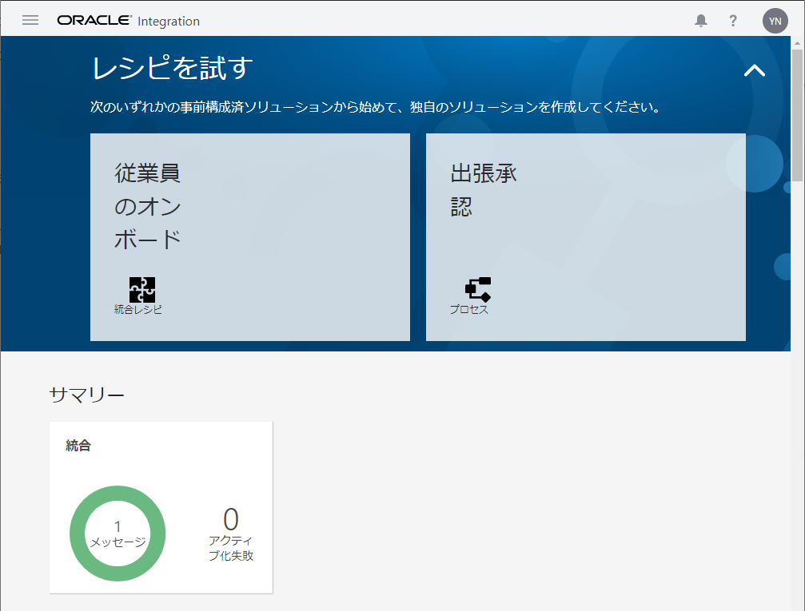
左ナビゲーションメニューの「ビジュアル・ビルダー」をクリックします。
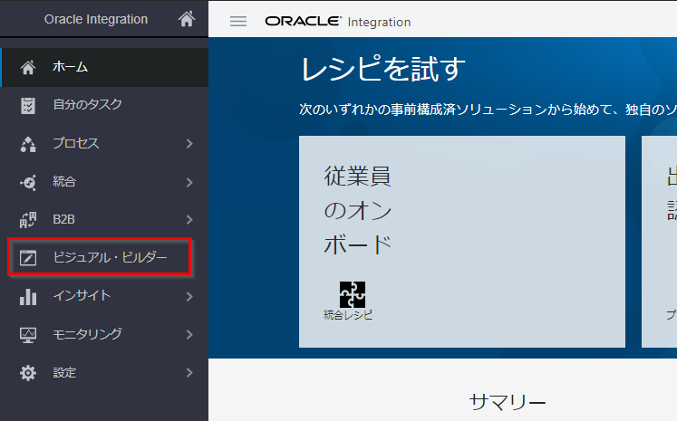
VBCSの「Visual Applications」ページが表示されたら、「New Application」ボタンをクリックします。

「Create Application」ダイアログ・ボックスが表示されます。次の表のように設定します。
| 設定項目 | 設定する値 | 説明 |
|---|---|---|
| 「Application name」 | GoogleMapTutorial | アプリケーションにつける名前 |
| 「Id」 | GoogleMapTutorial | アプリケーションのID。アプリケーションのURLにも用いられるので、VBCSのインスタンス内で一意である必要があります。 |
| 「Description」 | Tutorial Application | アプリケーションの簡単な説明 |
| 「Application template」 | Empty Application (デフォルト) | アプリケーションのテンプレート |
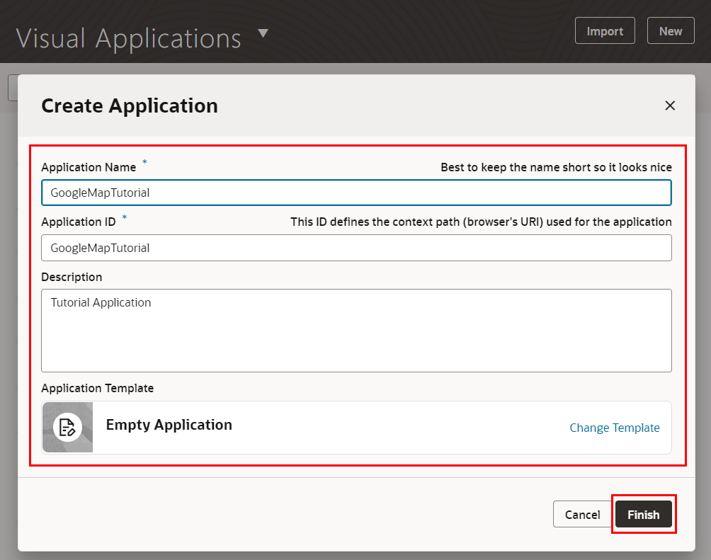
値を設定したら、「Create Application」ダイアログ・ボックスの「Finish」ボタンをクリックします。
ビジュアル・アプリケーションが作成されると、VBCSのアプリケーション・デザイナでビジュアル・アプリケーションがオープンします。アプリケーション・デザイナにはアーティファクト・ブラウザとWelcomeスクリーンが表示されます。Welcomeスクリーンには、VBCSでアプリケーションを作成するためのタスクのガイドが表示されます。
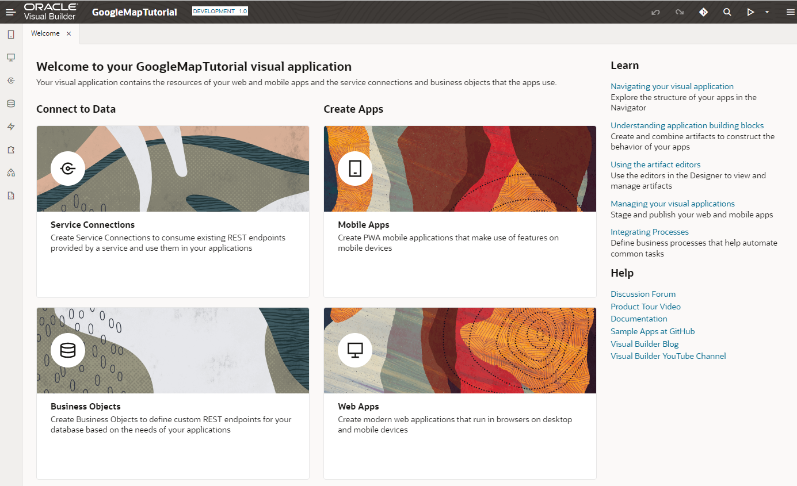
アプリケーション・デザイナの左側の領域はアーティファクト・ブラウザと呼ばれる領域で、アプリケーションを構成する各種ソース・ファイル（HTML/CSS/JavaScriptなど）や、データ・アクセスや画面フローの設定などアプリケーションを実行する際に必要となるメタデータ（JSONファイル）が表示され、アクセスできます。
アーティファクト・デザイナには、次のタブ・ページがあります。
| 項目 | アイコン | 説明 |
|---|---|---|
| Mobile Applications | 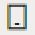 | モバイルデバイスの機能を利用するネイティブモバイルアプリケーションを作成します。 |
| Web Applications | 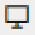 | デスクトップおよびモバイルデバイスのブラウザーで実行される最新のWebアプリケーションを作成します。 |
| Services | 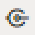 | サービス接続を作成して、サービスによって提供される既存のRESTエンドポイントを使用し、それらをアプリケーションで使用します。 |
| Business Objects | ビジネスオブジェクトを作成して、アプリケーションのニーズに基づいてデータベースのカスタムRESTエンドポイントを定義します。 | |
| Layouts | 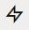 | レイアウトは、実行時に動的コンポーネントに表示されるフィールドを定義します。 |
| Components | 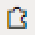 | アプリケーションで使用する追加のコンポーネントを入手します。 |
| Processes | Oracle IntegrationのProcess機能を使用して、ビジネスプロセスをアプリケーションに統合します。 | |
| Source View | 作成されたアプリケーションをソース形式で確認・編集することができます。 |
画面上部のアプリケーションの名前（Application nameとして指定したテキスト）の右隣に表示される「DEVELOPMENT」と「1.0」はそれぞれ、アプリケーションのステータス（development: 開発中を表す）とバージョンを表しています。
Web アプリケーションの作成
VBCSのビジュアル・アプリケーションは、1つ以上のWebアプリケーションまたはモバイル・アプリケーションを持ちます。このチュートリアルでは、Webアプリケーションを作成します。
アーティファクト・ブラウザの「Web Applications」タブをクリックします。 そのあと「+ Web Application」ボタン(またはアーティファクト・ブラウザの右上にある「＋」アイコン)をクリックします。
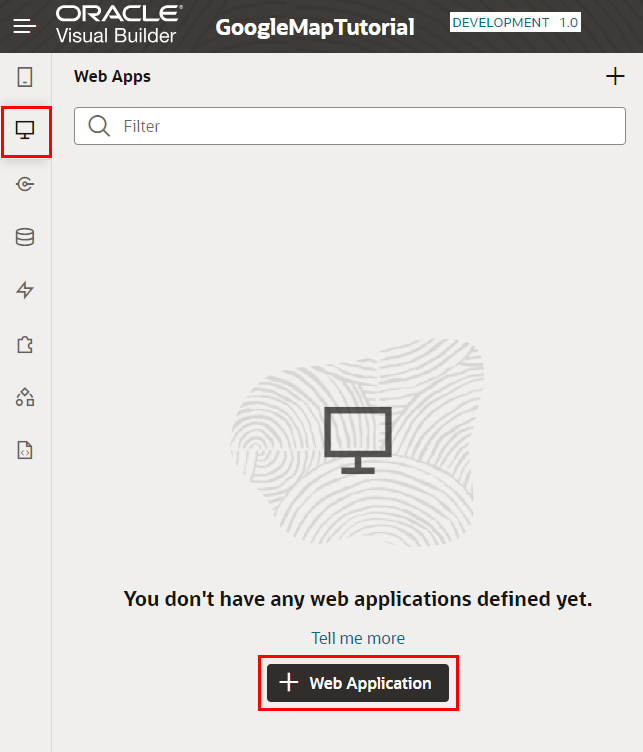
「Create Web Application」ダイアログ・ボックスが表示されたら、「Application Name」フィールドに「GoogleMapWebApp」と入力し、Navigation Styleに「None」を選択し、「Create」ボタンをクリックします。
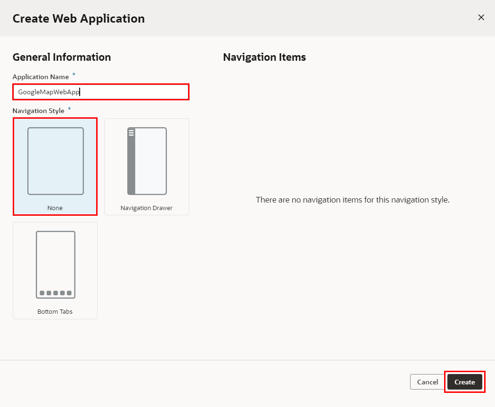
GoogleMapWebAppアプリケーションのアーティファクトが生成されます。ページ・デザイナで表示されている「main-start」が、アプリケーションの起動時に最初に表示される画面です。
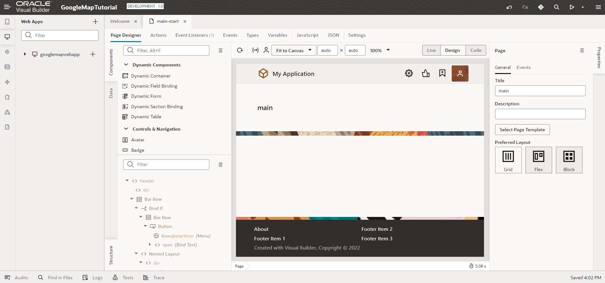
アーティファクト・ブラウザで「googlemapwebapp」ノードを展開するとWebアプリケーションの構造が表示されます。「main」ノードを展開すると「main-start」ページが表示されます。
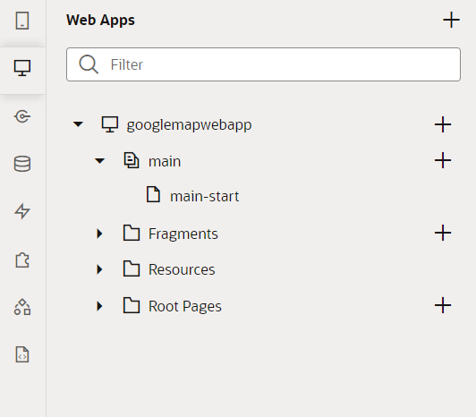
main-startページの編集
このパートでは、main-startページを編集して、テキストボックスに入力された住所の値を基に地図上にピンマークを設置します。
コンポーネントの追加
アプリケーション・デザイナの左側には、コンポーネント・パレットが表示されます。コンポーネント・パレットは、デザイナの左にあるコンポーネントタブで表示/非表示を切り替えることができます。
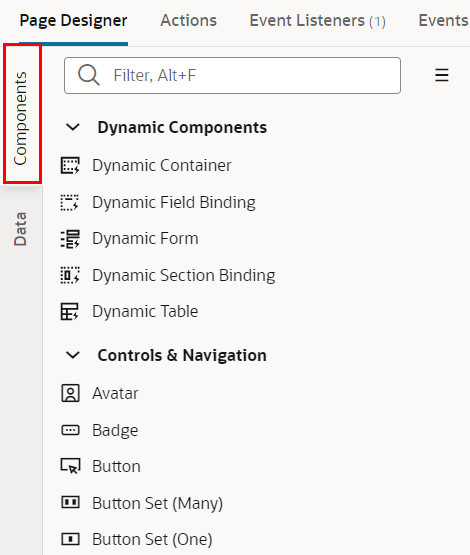
コンポーネント・パレットを下にスクロールし、「Forms & Inputs」カテゴリの「Input Text」コンポーネントを、タイトルの下にドラッグ＆ドロップします。レスポンシブWebデザイン・システムは、12列グリッド・レイアウト・スキームです。基本的に、画面はサイズに関係なく、12列に分割されます。項目を定義するときに、さまざまな画面サイズ（小型画面、中型画面、大きな画面、特大画面）に対して1から合計12まで、項目に必要な列数を指定します。ここでは、画面が中サイズの場合、Input Textコンポーネントの幅を6列にします。
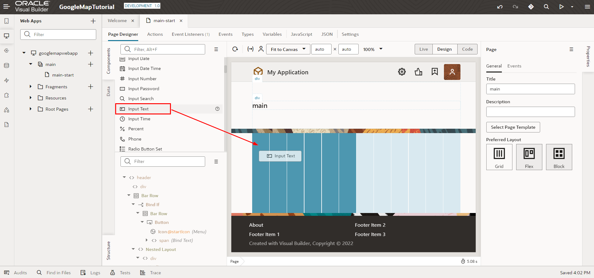
追加されたInput Textコンポーネントのプロパティ・インスペクタで「Label Hint」フィールドに「住所」と入力します。
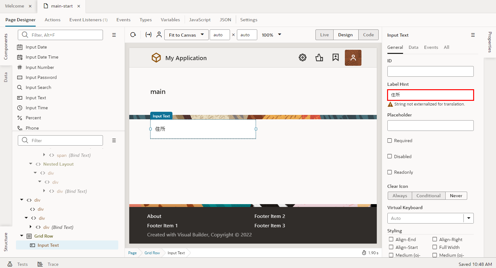
コンポーネント・パレットを上にスクロールし、「Controls & Navigation」カテゴリの「Button」コンポーネントを、住所の1列幅の右側にドラッグ＆ドロップします。Buttonコンポーネントの幅を2列にします。
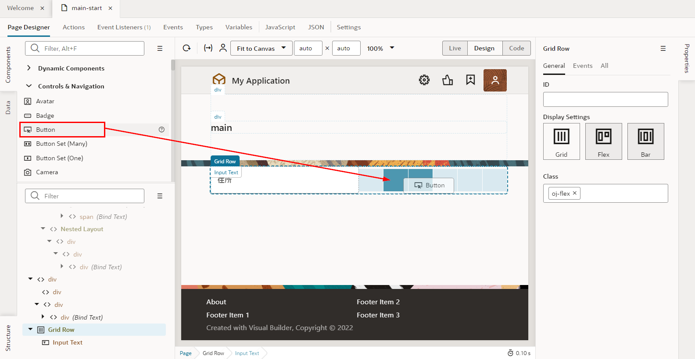
追加されたButtonコンポーネントのプロパティ・インスペクタで「Label」フィールドに「検索」と入力します。
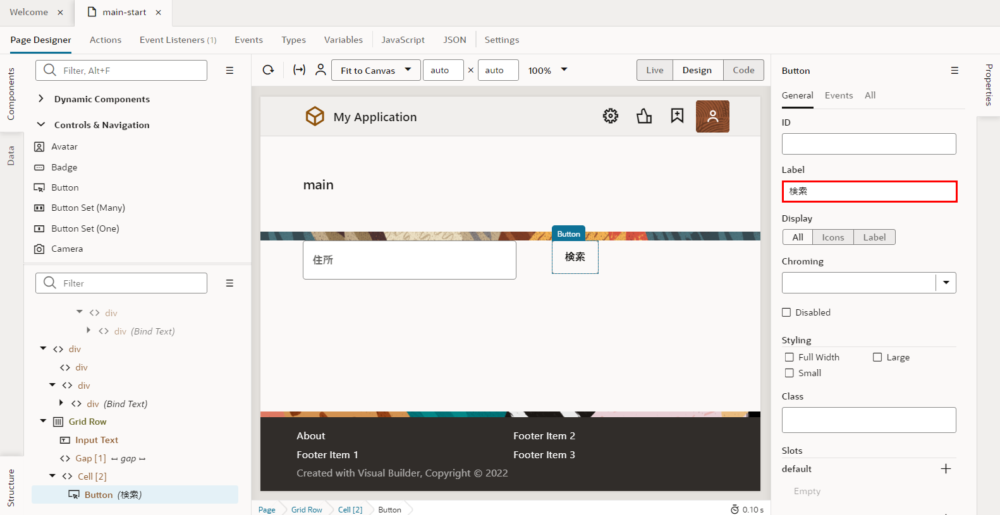
HTMLコードの変更
「Code」ボタンをクリックして、コード・モードに切り替えます。
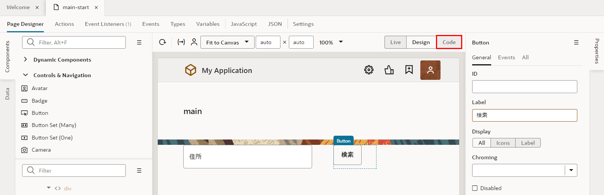
変更前のコードを確認します。
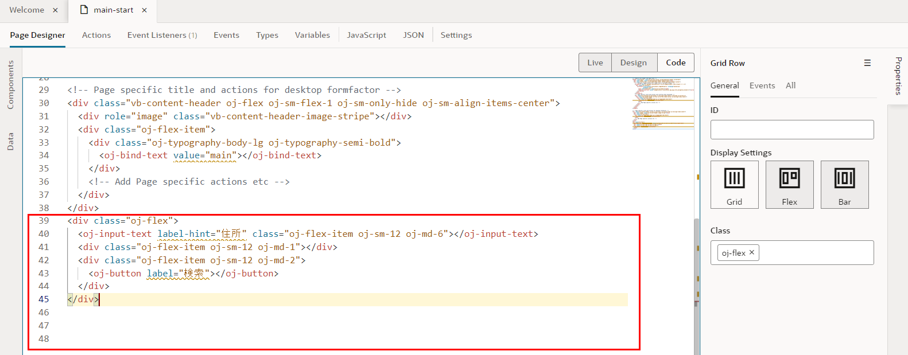
39行目にCSSクラスを追加し、46行目に地図用HTMLコードを追加します。 marginはCSSのプロパティで、要素の全四辺のマージン領域を設定します。追加したCSSクラスは、Oracle JETによって定義されたCSSクラスです。oj-md-margin-8x-topは、画面が中サイズ(md)の場合、要素の上側(top)に8単位(8x)のマージン領域を設定することを意味します。詳細はこちらをご確認ください。
<div class="oj-flex oj-sm-margin-8x-top oj-md-margin-8x-top">
<oj-input-text label-hint="住所" class="oj-flex-item oj-sm-12 oj-md-6"></oj-input-text>
<div class="oj-flex-item oj-sm-12 oj-md-1"></div>
<div class="oj-flex-item oj-sm-12 oj-md-2">
<oj-button label="検索"></oj-button>
</div>
</div>
<div id="map" class="oj-sm-margin-8x-top oj-md-margin-8x-top oj-sm-margin-8x-bottom oj-md-margin-8x-bottom"></div>
変更後のコードを確認します。
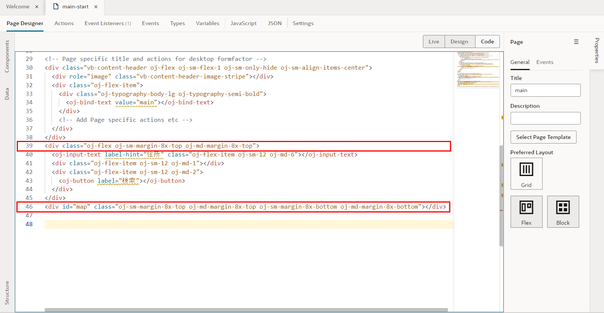
変数の作成
アプリケーション・デザイナの「Variables」タブをクリックします。「+ Variable」ボタンをクリックします。
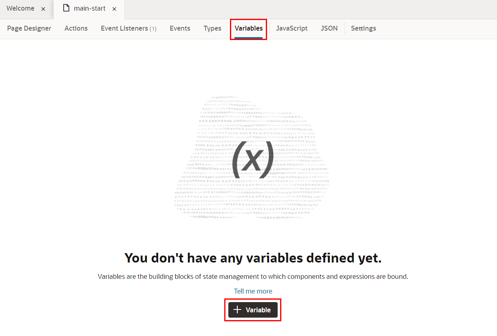
「ID」フィールドに「address」と入力し、「Create」ボタンをクリックします。
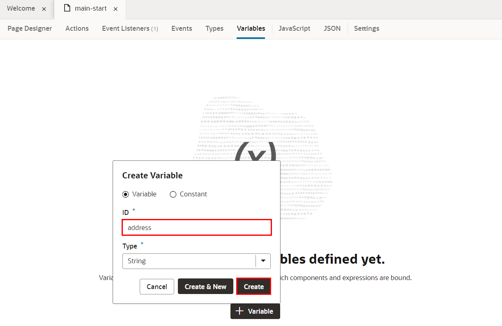
変数「address」のプロパティ・インスペクタで「Default Value」フィールドに「東京都千代田区神田小川町3-28-9」と入力します。
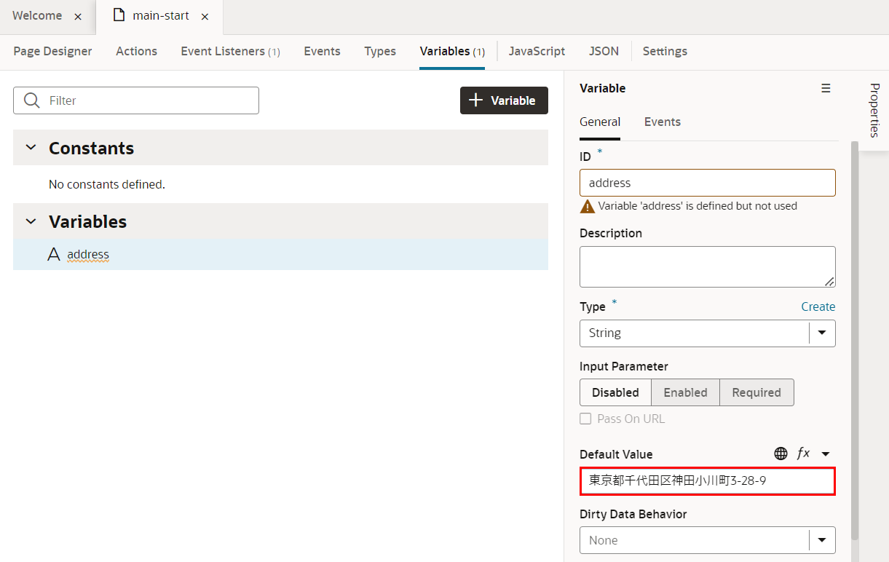
変数をInput Textコンポーネントにバインド
「Page Designer」タブを開き、「Design」ボタンをクリックして、デザイン・モードに切り替えます。Input Textコンポーネントを選択します。Input Textコンポーネントのプロパティ・インスペクタでDataタブを開きます。「Value」フィールドにカーソルを合わせて、「▼」をクリックします。
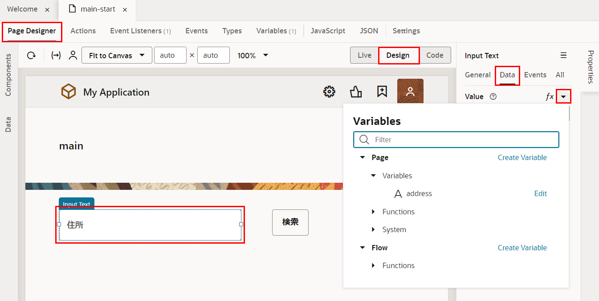
変数「address」をクリックします。
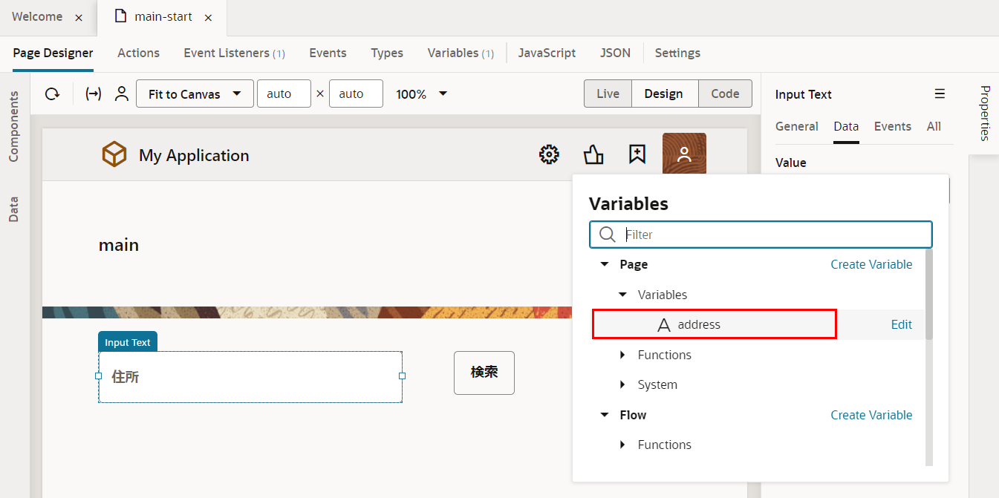
Google Map読み込み用JavaScriptコードの追加
アプリケーション・デザイナの「JavaScript」タブをクリックします。
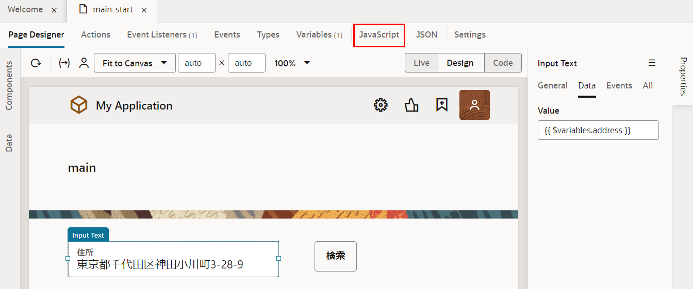
以下のJavaScriptコードを追加します。関数initMapと関数setCenterを定義します。
| 関数名 | 処理内容 |
|---|---|
| setCenter | テキストボックスに入力された住所に基づいて既存のGoogleマップ・オブジェクトの中心座標を再割当てし、マーカーの位置を変更します。 |
| initMap | Googleマップ・オブジェクトを作成し、テキストボックスに入力された住所を地図の中心座標として指定し、Googleマップ上にマーカーを表示します。 |
PageModule.prototype.setCenter = function (address) {
var geocoder = new google.maps.Geocoder();
geocoder.geocode({
'address': address
}, function (results, status) {
if (status === google.maps.GeocoderStatus.OK) { // ステータスがOKの場合
var map = window.map;
map.setCenter(results[0].geometry.location);
window.marker.setMap(null);
window.marker = new google.maps.Marker({
position: results[0].geometry.location, // マーカーを立てる位置を指定
map: map // マーカーを立てる地図を指定
});
} else { // 失敗した場合
alert(status);
}
});
};
PageModule.prototype.initMap = function (address) {
var geocoder = new google.maps.Geocoder();
geocoder.geocode({
'address': address
}, function (results, status) {
if (status === google.maps.GeocoderStatus.OK) { // ステータスがOKの場合
var map = new google.maps.Map(document.getElementById('map'), {
center: results[0].geometry.location, // 地図の中心を指定
zoom: 19 // 地図のズームを指定
});
window.map = map;
window.marker = new google.maps.Marker({
position: results[0].geometry.location, // マーカーを立てる位置を指定
map: map // マーカーを立てる地図を指定
});
} else { // 失敗した場合
alert(status);
}
});
};
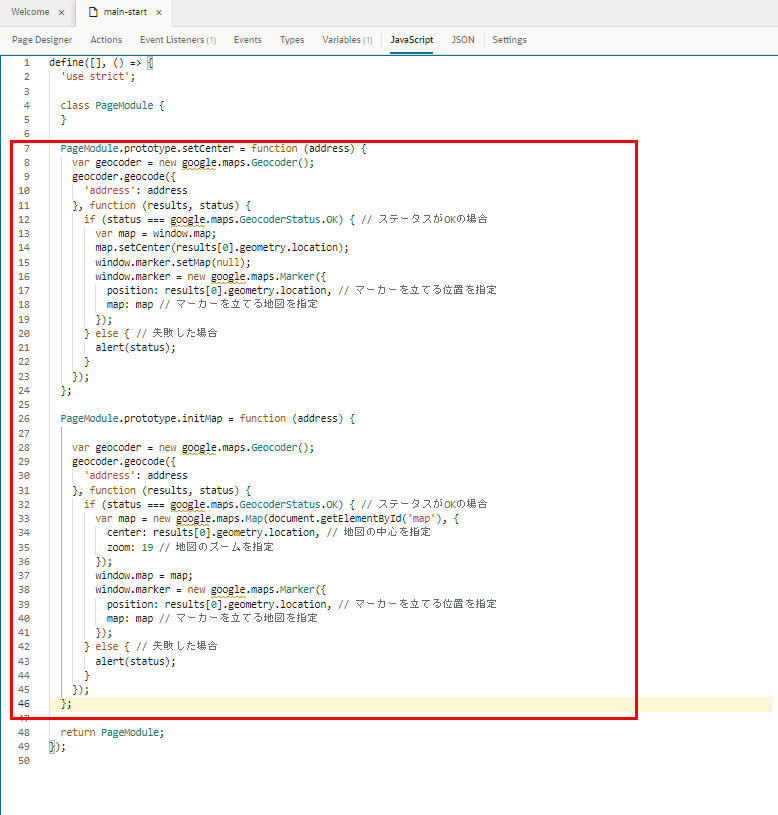
画面の初期化イベントと検索ボタンのイベントを作成する
次に、画面の初期化イベントと検索ボタンのイベントを作成し、先ほど記述したJavaScriptコードを呼び出します。
アプリケーション・デザイナの「Event Listeners」タブをクリックします。
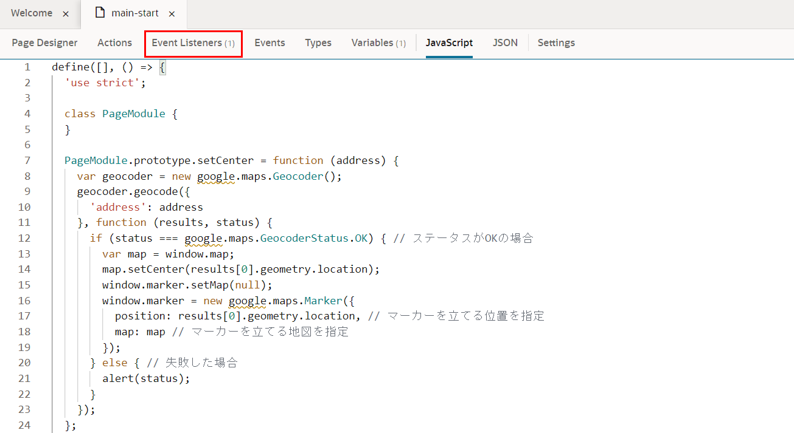
「＋Event Listener」ボタンをクリックします。
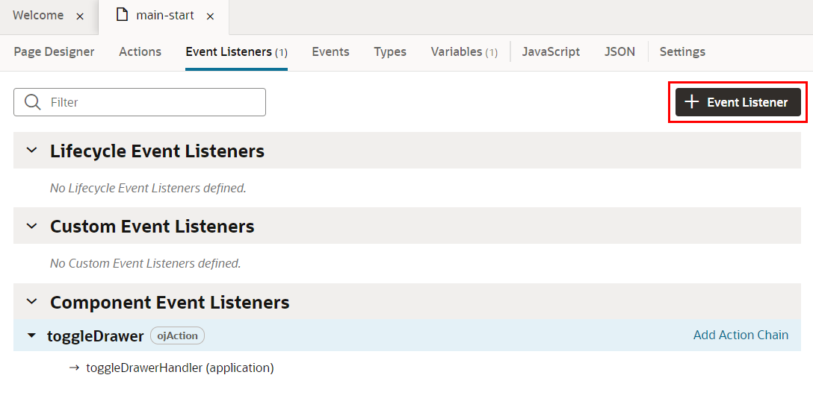
「vbEnter」を選択し、「Next >」ボタンをクリックします。 vbEnterイベントは、すべてのフロー変数またはページ変数が初期化されると、トリガーされます。詳細はこちらをご確認ください。
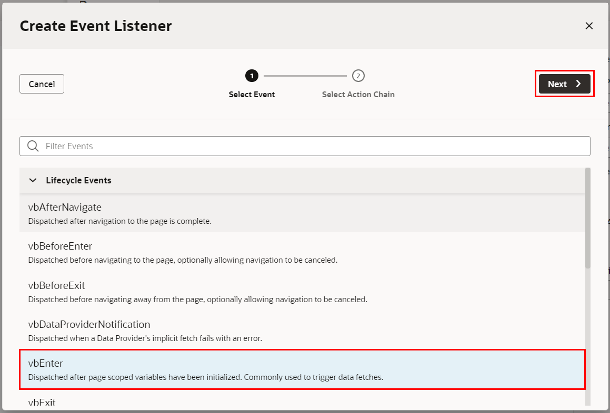
「Page Action Chains」の隣にある「⊕」アイコンをクリックします。
アクション・チェーンは1つ以上の個別のアクションで構成され、それぞれが単一の非同期作業単位を表します。アクション・チェーンはイベントによってトリガーされます。
アクション・チェーンにはアプリケーション・レベルまたはページ・レベルで定義できます。アプリケーション・スコープのアクション・チェーンはどのページからでも呼び出すことができます。ページ・スコープのアクション・チェーンは、それが定義されているページからのみ呼び出すことができます。各スコープについてはこちらをご確認ください。
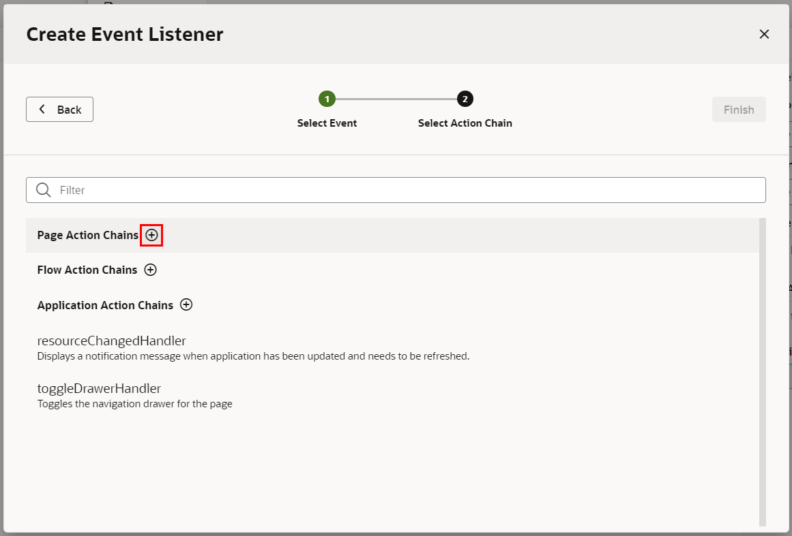
インプット・テキストに「InitMapChain」を入力し、「Finish」ボタンをクリックします。
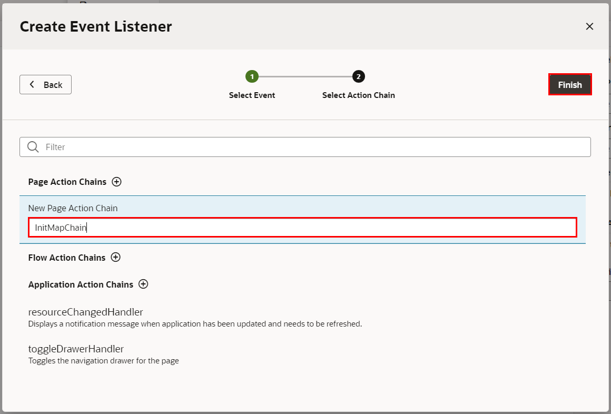
次に作成したアクション・チェーンに処理を追加します。「InitMapChain」アクション・チェーンにカーソルを合わせて、「Go to Action Chain」のリンクをクリックします。
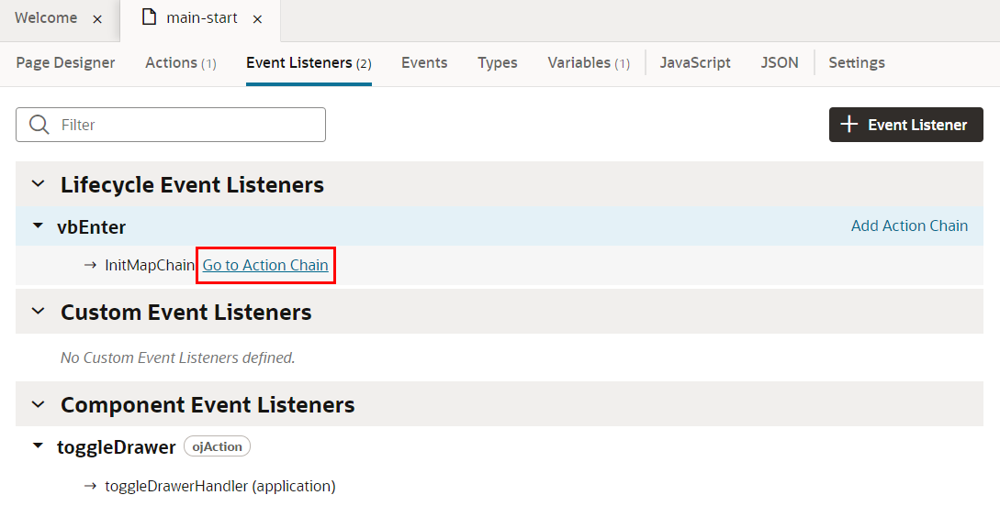
「Call Function」のアクションを「Start」 アクションの下に表示されている「＋」マークの上にドラッグ＆ドロップで設定し、右側に表示されたプロパティ・インスペクタで「Function Name」に「initMap」を選択します。(この「initMap」は前の手順で追加したJavascriptの関数名です。)
「Input Parameters」の横にある「Assign」のリンクをクリックします。
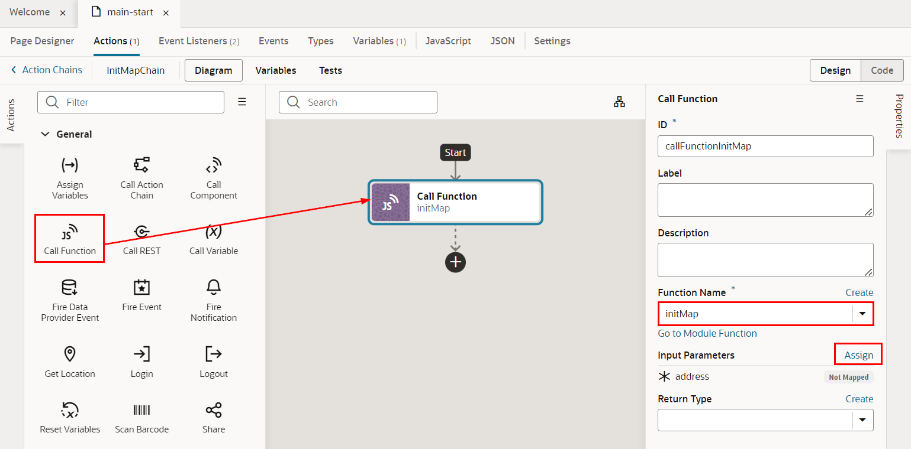
「Assign Input Parameters」ダイアログ・ボックスが表示されます。「Sources」ペインの変数「address」を「Target」ペインのパラメータ「address」にドラッグし、「Save」ボタンをクリックします。
「Page Designer」タブをクリックします。
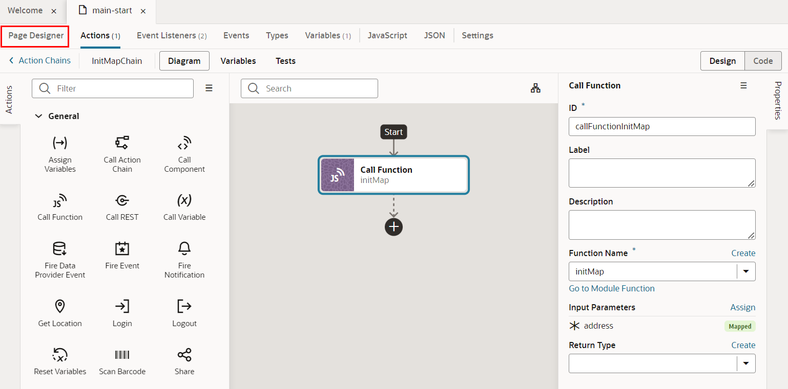
「検索」ボタンを選択します。プロパティ・インスペクタで、「Events」タブ・ページを開きます。「+ New Event」ボタンをクリックすると表示されるメニューから「On ‘ojAction’」を選択します。
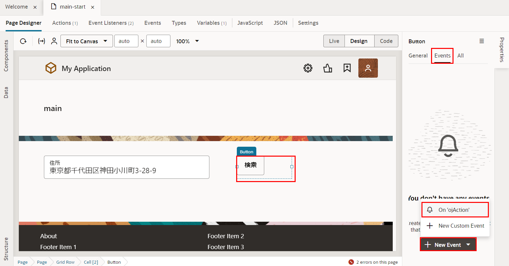
これにより、「検索」ボタンがクリックされた時に起動される、IdがButtonClickActionのアクション・チェーンが定義されます。画面の左側には、アクション・パレットが表示されています。「Call Function」のアクションを「Start」アクションの下に表示されている「＋」マークの上にドラッグ＆ドロップで設定し、右側に表示されたプロパティ・インスペクタで「Function Name」に「setCenter」を選択します。(この「setCenter」は前の手順で追加したJavascriptの関数名です。)
「Input Parameters」の横にある「Assign」のリンクをクリックします。
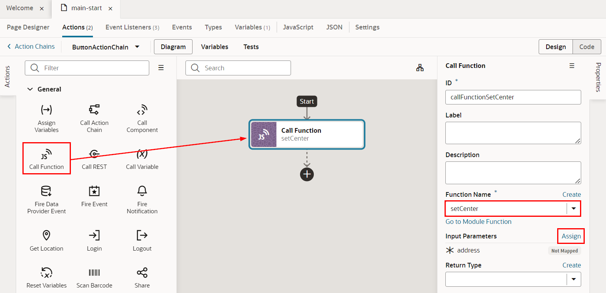
「Assign Input Parameters」ダイアログ・ボックスが表示されます。「Sources」ペインの変数「address」を「Target」ペインのパラメータ「address」にドラッグし、「Save」ボタンをクリックします。
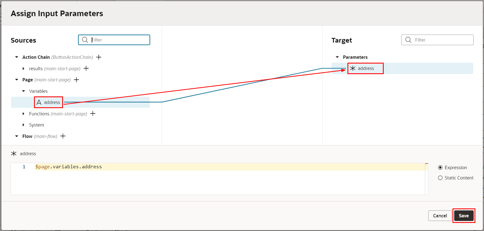
CSSの追加
「googlemapwebapp」 → 「Resources」 → 「css」ノードを展開して、「app.css」を開きます。以下のCSSコードを追加します。
#map {
position: relative;
width: 100%;
height: 0;
padding-top: 40%; /* ajust map height here */
overflow: hidden;
}
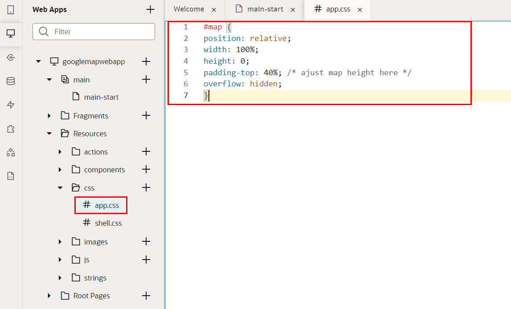
Google Maps JavaScript APIライブラリを追加
「Source View」タブをクリックします。「webApps」 → 「googlemapwebapp」 → 「index.html」を開き、以下のHTMLコードを追加します。＜YOUR API KEY＞の部分はご自身で取得したGoogleマップAPI KEYを入力してください。
<script async defer
src="https://maps.googleapis.com/maps/api/js?key=＜YOUR API KEY＞"></script>
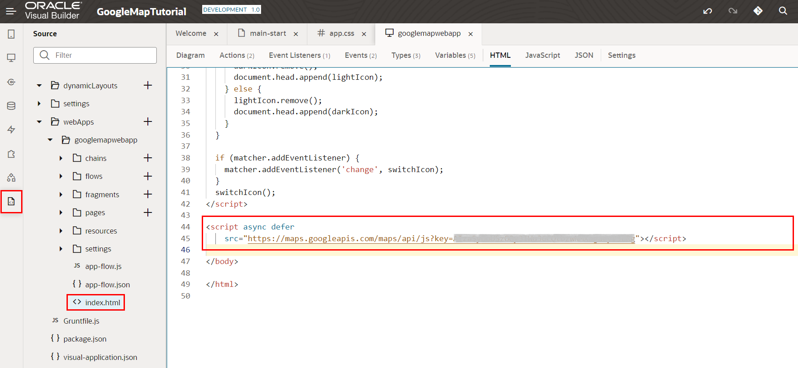
動作確認
最後に作成した画面を動作確認しましょう。
画面右上にある「▷」(Run アイコン)をクリックします。

以下のような画面ができていることを確認できます。
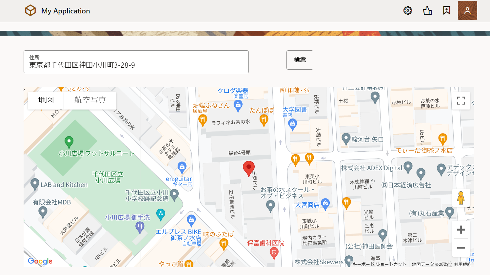
住所のテキストボックスに任意の住所を入力して、「検索」ボタンをクリックします。地図の中心座標とマーカーの位置が変更されたことを確認します。
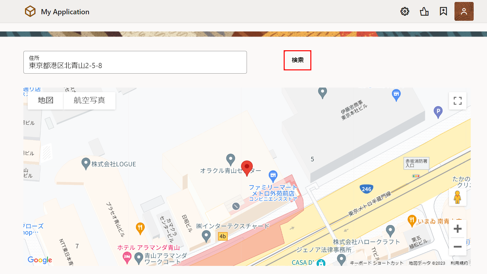